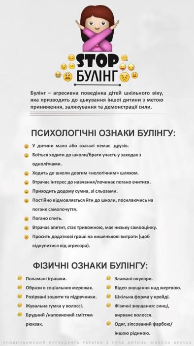

Що таке булінг?
Образливі прізвиська, глузування, піддражнювання, підніжки, стусани з боку одного або групи учнів щодо однокласника чи однокласниці – це ознаки нездорових стосунків, які можуть призвести до цькування — регулярного, повторюваного день у день знущання. Регулярне та цілеспрямоване нанесення фізичної й душевної шкоди стало об’єктом уваги науковців і педагогів, починаючи з 70-х років минулого століття, й отримало спеціальну назву – булінґ. Прикметною ознакою булінґу є довготривале «відторгнення» дитини її соціальним оточенням. Найчастіше булінґ відбувається в таких місцях, де контроль з боку дорослих менший або взагалі його нема. Це може бути шкільний двір, сходи, коридори, вбиральні, роздягальні, спортивні майданчики. У деяких випадках дитина може піддаватися знущанням і поза територією школи, кривдники можуть перестріти її на шляху до дому. Навіть удома жертву булінґу можуть продовжувати цькувати, надсилаючи образливі повідомлення на телефон або через соціальні мережі. За даними різних досліджень, майже кожен третій учень в Україні так чи інакше зазнавав булінґу в школі, потерпав від принижень і глузувань: 10 % – регулярно (раз на тиждень і частіше); 55 % – частково піддаються знущанню з боку однокласників; 26 % – батьків вважають своїх дітей жертвами булінґу. Більшість з них соромляться, що стали жертвою знущань і нікому про це не говорять.
У такому разі батькам та керівникам варто поговорити із дитиною, вислухати та допомогти вирішити проблемну ситуацію.
Види булінгу
Зазвичай терміном “булінг” описують цькування серед учнів, проте трапляються випадки цькування школярів вчителями, а іноді й вчителя учнями.
- Серед учнів;
- Цькування учня вчителем;
- Цькування вчителя учнями;
- Цькування вчителя у педагогічному колективі (мобінг).
Що таке кібербулінг
Окремою формою цькувань серед підлітків називають “кібербулінг”. Вона набула поширення з появою мобільних телефонів та інтернету. У цьому випадку “зброєю” булера стають соціальні мережі, форуми, чати чи мобільні телефони тощо. Булер може вдаватись до анонімних погроз, дзвінків з мовчанням, переслідування, тролінг чи просто знімати на відео знущання інших, щоб потім поширити це в мережі.
Як протистояти булінгу?
Жертви булінґу переживають важкі емоції – почуття приниження і сором, страх, розпач і злість. Булінґ вкрай негативно впливає на соціалізацію жертви, спричиняючи:
- неадекватне сприймання себе – занижену самооцінку, комплекс неповноцінності, беззахисність;
- негативне сприймання однолітків – відсторонення від спілкування, самотність, часті прогули у школі;
- неадекватне сприймання реальності – підвищену тривожність, різноманітні фобії, неврози;
- девіантну поведінку – схильність до правопорушень, суїцидальні наміри, формування алкогольної, тютюнової чи наркотичної залежності.
Як реагувати на цькування
Молодші школярі мають неодмінно звертатися по допомогу до дорослих — учителів і батьків. Допомога дорослих дуже потрібна і в будь-якому іншому віці, особливо якщо дії кривдників можуть завдати серйозної шкоди фізичному та психічному здоров’ю. Старші діти, підлітки можуть спробувати самостійно впоратись із деякими ситуаціями. Психологами було розроблено кілька порад для них.
Як впоратися з ситуацією самостійно
- Ігноруйте кривдника. Якщо є можливість, намагайтесь уникнути сварки, зробіть вигляд, що вам байдуже і йдіть геть. Така поведінка не свідчить про боягузтво, адже, навпаки, іноді зробити це набагато складніше, ніж дати волю емоціям.
- Якщо ситуація не дозволяє вам піти, зберігаючи самовладання, використайте гумор. Цим ви можете спантеличити кривдника/кривдників, відволікти його/їх від наміру дошкулити вам.
- Стримуйте гнів і злість. Адже це саме те, чого домагається кривдник. Говоріть спокійно і впевнено, покажіть силу духу.
- Не вступайте в бійку. Кривдник тільки й чекає приводу, щоб застосувати силу. Що агресивніше ви реагуєте, то більше шансів опинитися в загрозливій для вашої безпеки і здоров’я ситуації.
- Не соромтеся обговорювати такі загрозливі ситуації з людьми, яким ви довіряєте. Це допоможе вибудувати правильну лінію поведінки і припинити насилля.
Що можуть зробити батьки
Багато учнів соромляться розповідати дорослим, що вони є жертвами булінґу. Проте якщо дитина все-таки підтвердила в розмові, що вона стала жертвою булінґу, то скажіть їй:
Я тобі вірю (це допоможе дитині зрозуміти, що Ви повністю на її боці). Мені шкода, що з тобою це сталося (це допоможе дитині зрозуміти, що Ви переживаєте за неї і співчуваєте їй). Це не твоя провина (це допоможе дитині зрозуміти, що її не звинувачують у тому, що сталося). Таке може трапитися з кожним (це допоможе дитині зрозуміти, що вона не самотня: багатьом її одноліткам доводиться переживати залякування та агресію в той чи той момент свого життя).